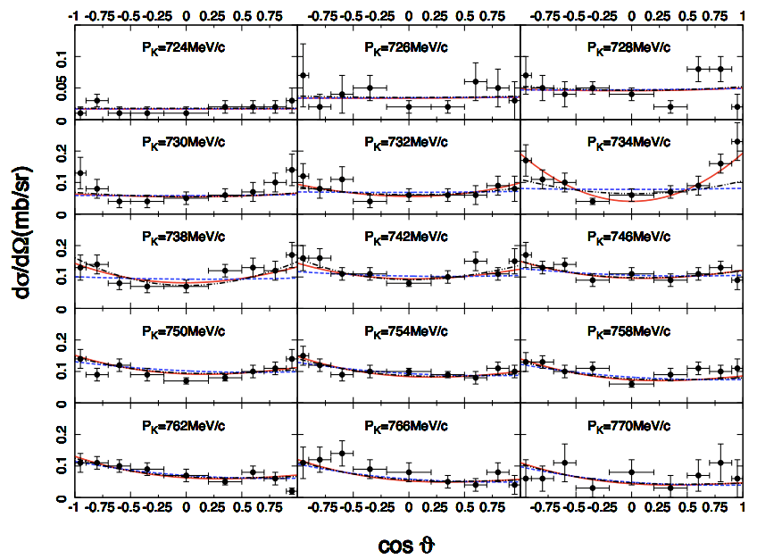

Physics Motivation
The constituent quark model has been incredibly successful in classifying baryon states. However, recent data from the Crystal Ball experiment revealed evidence of a very narrow Λ* resonance (width ~10 MeV) around 1665 MeV. If this state were a simple 3-quark (uds) structure, it should decay very quickly via the strong force, resulting in a much broader resonance width. Its narrowness contradicts the standard quark model. A compelling hypothesis is that it is an 'exotic hadron'—either a molecular-like bound state of a meson and a baryon, or a pentaquark state consisting of four quarks and one antiquark. Confirming the true nature of this narrow Λ*(1665) would prove that hadrons can form entirely new hierarchical structures such as 'hadronic molecules' or 'pentaquarks'.

Differential cross-sections from the Crystal Ball experiment. It shows that the angular distribution behaves differently (exhibiting a parabolic shape) specifically at a beam momentum of 734 MeV/c.
The Experiment
We will conduct a definitive search using the K-p → Λη reaction at J-PARC. By utilizing the newly built large-acceptance hypTPC detector, we can capture the decay products without kinematic bias. We will not only establish the existence of the proposed narrow Λ*(1665) but also analyze angular distributions and the polarization of the Λ particle to completely determine its spin and parity. Data acquisition for this experiment was successfully performed in November 2025.